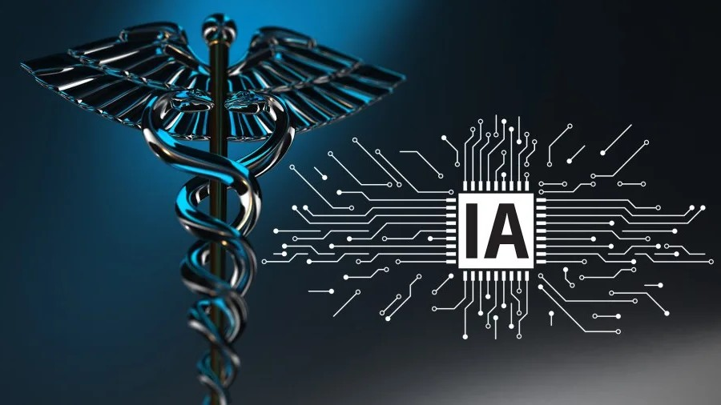

Carry it anywhere. Designed for easy movement across clinics, mobile vans, disaster sites, and field hospitals.
Operates for up to 14 hours on a single charge, ensuring uninterrupted diagnostics even where electricity is unreliable.
Captures clear, digital X-ray images in seconds for quick diagnosis and fast patient care.
Connects easily to phones, tablets, or laptops using built-in wireless options.
Simple controls allow health workers to operate the device with minimal training-perfect for remote and underserved areas.

Get instant insights for conditions like pneumonia, TB, cancer, fractures, and lung diseases-powered by advanced AI solution.
Store, view, and manage X-rays from anywhere. Hospitals, NGOs, and clinics can access images securely through our cloud platform.
Radiologists can verify reports online, enabling quality diagnostics even where specialists are not available.
A clean, intuitive dashboard shows patient history, reports, and images-all in one place.
The Eco-Scanner becomes smarter over time with regular AI and software upgrades delivered through the cloud.
We develop minimally invasive neural sensing platforms designed to improve diagnostics and treatment precision.
Our systems leverage AI-driven analytics to deliver actionable insights in real-time clinical environments.
Integrated device ecosystems enable seamless communication between sensors, software, and clinical applications.
Eco-Scanner brings advanced imaging to the last mile - empowering healthcare workers, saving time, reducing costs, and transforming access to life-saving diagnostics.